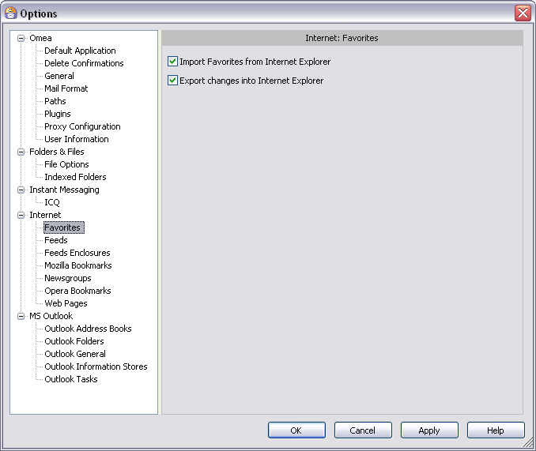
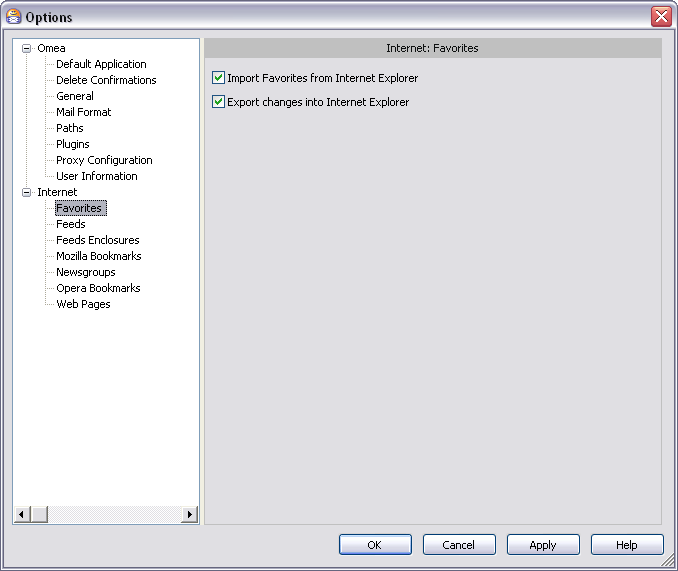

Favorites
You can access this option from the Main menu: Tools | Options: Internet: Favorites
This page provides options that control how Omea ReaderOmea Pro handles your Internet Explorer Favorites.
 Internet Explorer Favorites options in the Options Dialog
Import Favorites from Internet Explorer
When checked, Omea ReaderOmea Pro imports your Internet Explorer Favorites list, downloads the pages, and indexes their content.
You can control when the pages are downloaded in the Web Pages options.
Export Changes into Internet Explorer
When checked, any changes you make to Internet Explorer Favorites while working in Omea ReaderOmea Pro will be exported back to Internet Explorer, thus keeping your Favorites list in the browser in sync with Omea ReaderOmea Pro .
See also: